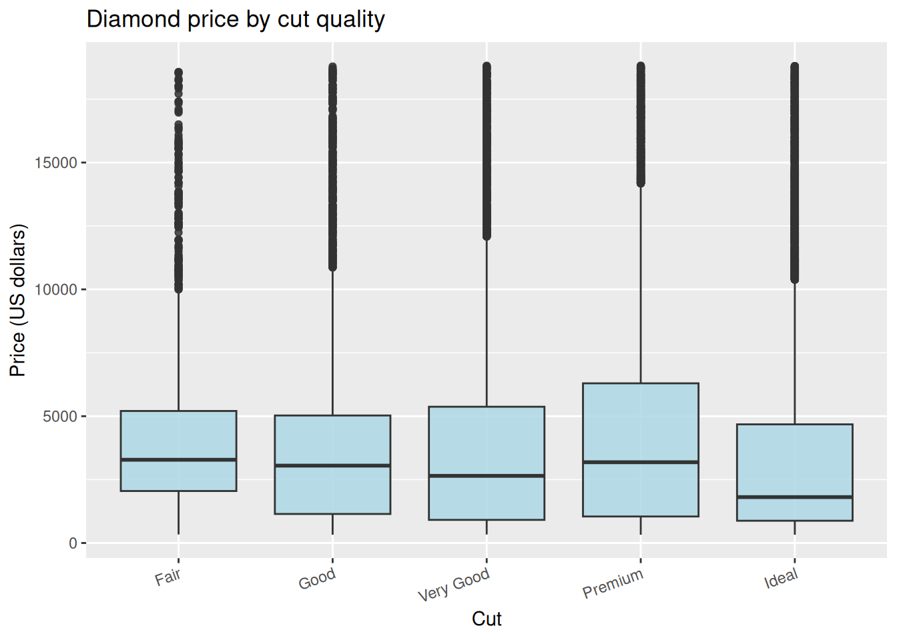
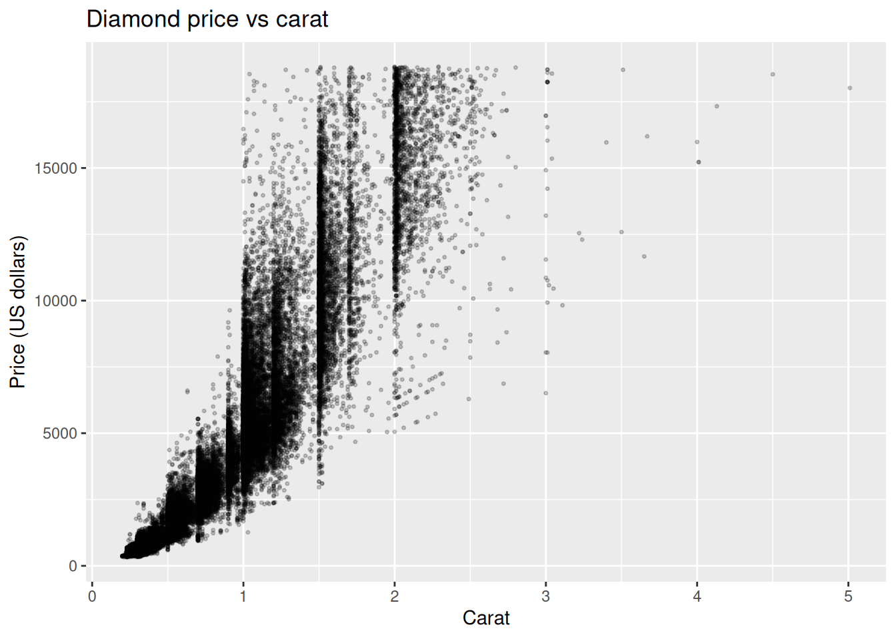
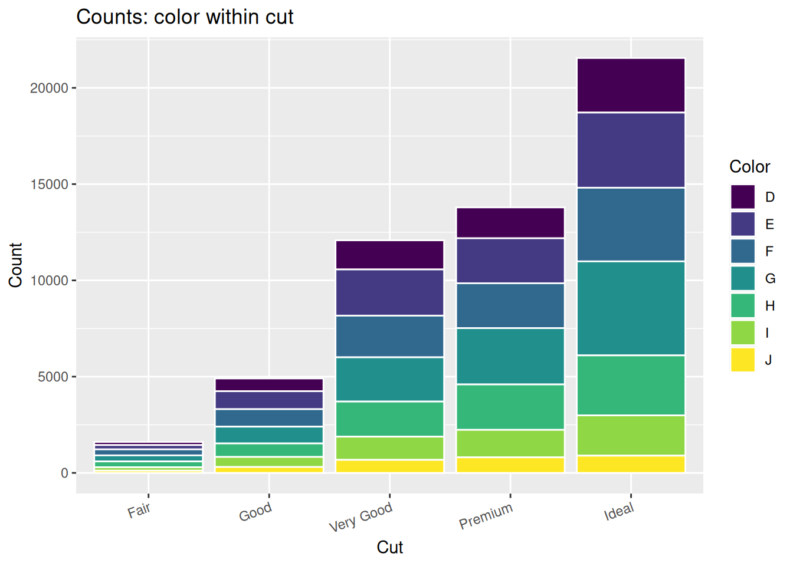
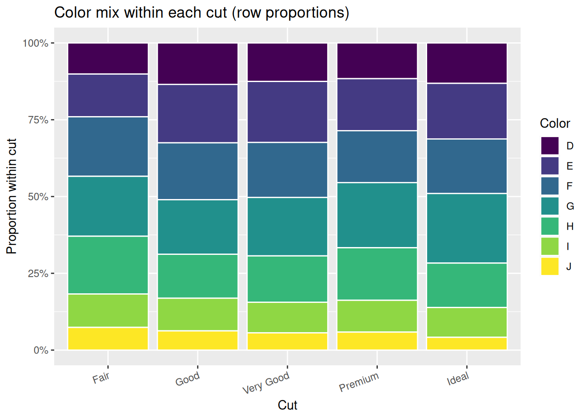

Code
if (!requireNamespace("tidyverse", quietly = TRUE)) {
install.packages("tidyverse", repos = "https://cloud.r-project.org")
}
library(tidyverse)
data("diamonds", package = "ggplot2")
d <- diamondsSTAT 109: Introductory Biostatistics
This file contains full solutions. To make the student assignment, start from this document or from the student version and delete the code in each exercise chunk (or distribute lab-10-diamonds-student.qmd only).
diamonds — solutionsSame exercises as lab-10-diamonds-student.qmd, with answers filled in.
| Function / pattern | What it does |
|---|---|
read_csv("url_or_path") |
Reads a CSV from the web or from a file path (e.g. after upload in Colab). |
is.na(x), sum(is.na(x)) |
Detects missing values; counts how many in a vector. |
summarize(across(everything(), ~ …)) |
Applies a summary (e.g. count of NA) to every column. |
drop_na(col1, col2, …) |
Drops rows with missing values in any of the listed columns. |
count(A, B) |
Counts rows for each combination of two variables (long format). |
pivot_wider() |
Turns long counts into a two-way table with column names from one variable. |
group_by() + mutate(prop = n / sum(n)) |
Converts cell counts to proportions within each group (row or column, depending on what you group by). |
group_by(cat) + summarize() |
Numeric summaries of one variable within each category. |
ggplot() + geom_boxplot() |
Compares a numerical variable across categories. |
ggplot() + geom_point() |
Scatterplot for two numerical variables. |
ggplot() + geom_col() |
Stacked bar chart when you map fill to a second categorical variable. |
geom_col(position = "fill") |
100% stacked bars (proportions within each bar); often with scale_y_continuous(labels = scales::label_percent()). |
if (!requireNamespace("tidyverse", quietly = TRUE)) {
install.packages("tidyverse", repos = "https://cloud.r-project.org")
}
library(tidyverse)
data("diamonds", package = "ggplot2")
d <- diamondsnrow(d)[1] 53940ncol(d)[1] 10glimpse(d)Rows: 53,940
Columns: 10
$ carat <dbl> 0.23, 0.21, 0.23, 0.29, 0.31, 0.24, 0.24, 0.26, 0.22, 0.23, 0.…
$ cut <ord> Ideal, Premium, Good, Premium, Good, Very Good, Very Good, Ver…
$ color <ord> E, E, E, I, J, J, I, H, E, H, J, J, F, J, E, E, I, J, J, J, I,…
$ clarity <ord> SI2, SI1, VS1, VS2, SI2, VVS2, VVS1, SI1, VS2, VS1, SI1, VS1, …
$ depth <dbl> 61.5, 59.8, 56.9, 62.4, 63.3, 62.8, 62.3, 61.9, 65.1, 59.4, 64…
$ table <dbl> 55, 61, 65, 58, 58, 57, 57, 55, 61, 61, 55, 56, 61, 54, 62, 58…
$ price <int> 326, 326, 327, 334, 335, 336, 336, 337, 337, 338, 339, 340, 34…
$ x <dbl> 3.95, 3.89, 4.05, 4.20, 4.34, 3.94, 3.95, 4.07, 3.87, 4.00, 4.…
$ y <dbl> 3.98, 3.84, 4.07, 4.23, 4.35, 3.96, 3.98, 4.11, 3.78, 4.05, 4.…
$ z <dbl> 2.43, 2.31, 2.31, 2.63, 2.75, 2.48, 2.47, 2.53, 2.49, 2.39, 2.…d |>
select(price, carat, cut, color, depth) |>
summarize(across(everything(), ~ sum(is.na(.))))# A tibble: 1 × 5
price carat cut color depth
<int> <int> <int> <int> <int>
1 0 0 0 0 0The built-in diamonds object has no NA in these columns (all counts zero).
d |>
group_by(cut) |>
summarize(
n = n(),
mean_price = mean(price),
median_price = median(price),
sd_price = sd(price)
)# A tibble: 5 × 5
cut n mean_price median_price sd_price
<ord> <int> <dbl> <dbl> <dbl>
1 Fair 1610 4359. 3282 3560.
2 Good 4906 3929. 3050. 3682.
3 Very Good 12082 3982. 2648 3936.
4 Premium 13791 4584. 3185 4349.
5 Ideal 21551 3458. 1810 3808.ggplot(d, aes(x = cut, y = price)) +
geom_boxplot(fill = "lightblue", alpha = 0.85) +
labs(
title = "Diamond price by cut quality",
x = "Cut",
y = "Price (US dollars)"
) +
theme(axis.text.x = element_text(angle = 20, hjust = 1))
ggplot(d, aes(x = carat, y = price)) +
geom_point(alpha = 0.2, size = 0.6) +
labs(
title = "Diamond price vs carat",
x = "Carat",
y = "Price (US dollars)"
)
(b) Example sentence: The association is strong, positive, and nonlinear (curved): price rises steeply with carat at larger sizes, with tighter scatter at small carat values.
(a) Two-way counts (wide):
d |>
count(cut, color) |>
pivot_wider(names_from = color, values_from = n, values_fill = 0)# A tibble: 5 × 8
cut D E F G H I J
<ord> <int> <int> <int> <int> <int> <int> <int>
1 Fair 163 224 312 314 303 175 119
2 Good 662 933 909 871 702 522 307
3 Very Good 1513 2400 2164 2299 1824 1204 678
4 Premium 1603 2337 2331 2924 2360 1428 808
5 Ideal 2834 3903 3826 4884 3115 2093 896(b) Joint proportions (denominator = \(N\) for all cells):
d |>
count(cut, color) |>
mutate(prop_joint = n / sum(n))# A tibble: 35 × 4
cut color n prop_joint
<ord> <ord> <int> <dbl>
1 Fair D 163 0.00302
2 Fair E 224 0.00415
3 Fair F 312 0.00578
4 Fair G 314 0.00582
5 Fair H 303 0.00562
6 Fair I 175 0.00324
7 Fair J 119 0.00221
8 Good D 662 0.0123
9 Good E 933 0.0173
10 Good F 909 0.0169
# ℹ 25 more rows(c) Row proportions (within each cut):
d |>
count(cut, color) |>
group_by(cut) |>
mutate(prop_row = n / sum(n)) |>
ungroup()# A tibble: 35 × 4
cut color n prop_row
<ord> <ord> <int> <dbl>
1 Fair D 163 0.101
2 Fair E 224 0.139
3 Fair F 312 0.194
4 Fair G 314 0.195
5 Fair H 303 0.188
6 Fair I 175 0.109
7 Fair J 119 0.0739
8 Good D 662 0.135
9 Good E 933 0.190
10 Good F 909 0.185
# ℹ 25 more rows(d) Column proportions (within each color):
d |>
count(cut, color) |>
group_by(color) |>
mutate(prop_col = n / sum(n)) |>
ungroup()# A tibble: 35 × 4
cut color n prop_col
<ord> <ord> <int> <dbl>
1 Fair D 163 0.0241
2 Fair E 224 0.0229
3 Fair F 312 0.0327
4 Fair G 314 0.0278
5 Fair H 303 0.0365
6 Fair I 175 0.0323
7 Fair J 119 0.0424
8 Good D 662 0.0977
9 Good E 933 0.0952
10 Good F 909 0.0953
# ℹ 25 more rows(e)–(f) Stacked bars:
ct <- d |> count(cut, color)
ggplot(ct, aes(x = cut, y = n, fill = color)) +
geom_col(color = "white") +
labs(
title = "Counts: color within cut",
x = "Cut",
y = "Count",
fill = "Color"
) +
theme(axis.text.x = element_text(angle = 20, hjust = 1))
ggplot(ct, aes(x = cut, y = n, fill = color)) +
geom_col(position = "fill", color = "white") +
scale_y_continuous(labels = scales::label_percent()) +
labs(
title = "Color mix within each cut (row proportions)",
x = "Cut",
y = "Proportion within cut",
fill = "Color"
) +
theme(axis.text.x = element_text(angle = 20, hjust = 1))
Within each bar in (f), segment heights sum to 100% (proportion of diamonds among that cut across color levels).